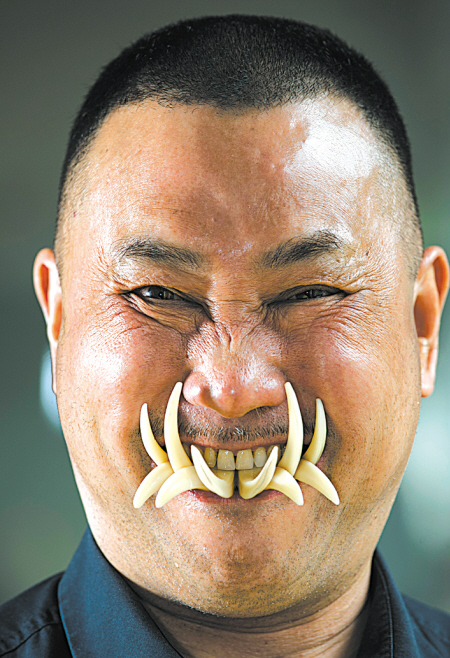

LAB BRIEFING
把复杂营销拆成四个动作
手艺人只需要会拍、会说，剩下的内容整理交给 AI：先把作品拍清楚，再生成一篇完整的小红书笔记，照着发布课堂完成上线，最后看数据决定下一篇拍什么。
本站不替手艺人虚构经历，也不把非遗变成猎奇内容。AI 输出需要本人确认，平台数据为课程演示数据；技艺表述可随时对照技艺图典。


10 分钟上手路线
- 拍摄助手：检查光线、构图与主体清晰度
- 素材生成：输入一句话，生成整篇小红书笔记
- 平台课堂：学会注册、发布、回复与避坑
- 运营复盘：根据收藏、评论决定下期选题
拍摄检查待启动
作品入镜 · 本地预览 · 不上传
AI VISION · DEMO
实时预览 · 适合竖屏图文 / 短视频
--素材可用度
光线充足度等待检测
主体居中度等待检测
画面稳定度等待检测
AI
仅在本地调用摄像头，不采集或上传画面。评分用于演示拍摄检查流程。
把作品放在窗边，背景尽量干净，镜头同时拍到手艺细节和制作者本人，更容易建立信任。
AI CREATOR
小红书素材生成台 · 大模型
输入作品和故事，AI 一次生成标题、正文、封面字、配图清单与话题标签；所有内容都可以复制后再人工修改。
输出图片顺序、封面、定位、话题和发布前检查项，照着清单完成即可。
小红书笔记预览
✦
左侧输入一句作品介绍
AI 帮你整理成可发布素材
PLATFORM CLASS
小红书发布课堂
不会用平台也没关系。点一个问题，就能得到只讲当前步骤的简单说明。
VIDEO
FINGERPRINT
FINGERPRINT
视频指纹监测
上传真实耍牙表演视频，演示「画面 / 声音 / 关键帧」指纹比对。下方提供已下载的公开素材，可直接用于课程演示。
监测结果尚未开始
⌁
上传作品或点击左侧示例视频后，将展示疑似搬运标题、平台来源与相似度。
XIAOHONGSHU REVIEW · 大模型可刷新
发布后，下一篇拍什么？
不用学复杂报表，只看收藏、评论和主页访问三个信号。系统把模拟数据翻译成下一篇选题，让手艺人知道哪些内容值得继续讲。
AI 建议 · 默认策略
收藏明显高于点赞，说明观众更需要“看得懂、能保存”的制作过程。下一篇建议拍一组「一件作品从材料到完成」的 6 图笔记，封面先放成品，正文再讲三个关键步骤，并在评论区邀请大家提问。
高频评论样本（模拟）